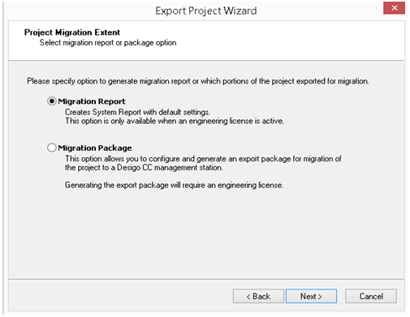

Desigo Insight Data Acquisition
Creating the Migration/Export Packet
The wizard for the project migration scope allows you to create a migration report or migration packet.
- Migration report: This option generates the system report using the default settings. The migration report provides an overview of the project configuration in a system report file. The option is disabled if you do not have a configuration dongle license.
- Migration packet: This option allows you to configure and generate an export packet to migrate a project to a Desigo CC management platform. The option is available in the wizard even if you do not have a configuration license. You can selection the option for the migration packet in the Migration/export wizard, but you cannot generation the iex file. The configured settings are saved in the settings file.

System Report
The system report (pdf) includes information on system and project configuration. The system report helps you estimate the size of the migration and when executing migration.
The following table displays entries from the Desigo Insight System Report and their counterparts in Desigo CC. Entries used for information only and/or not implemented one-to-one in Desigo CC cannot be displayed.
Desigo Insight | Management platform / Comment |
|---|---|
Other information |
|
Internetworks | |
User Group | User Groups |
Users | Users |
Management system | Management system |
Trend views | Trend views |
Reports | Reports |
Reactions | Reactions |
Router groups | Reno |
Alarm printer | Reno |
Email recipient | Reno |
Mandatory comment | For yes: Select the points for validation in Desigo CC. |
Time master | Time Synchronization |
Priority text | Alarm Management |
Account guidelines |
|
Password guidelines | The password guidelines are subject to the password guidelines for the computer or domain on Windows user accounts. |
Account lock out guidelines | Users The account lock out guidelines for domains are used if more restrictive and in Desigo CC. |
Archiving settings | Archiving |
Sites | Subsystem networks |
Field Devices |
|
Data point counter | The number of data points in Desigo CC is the same for PX devices. The data points can vary in Desigo CC (per room ca. 35 data points) for TRA devices. |
Connection and Plant – Management-platform specific data | BACnet Driver |
Lifecheck and Upload Settings | COV and Polling Info |
UD structure definition | Alias name |